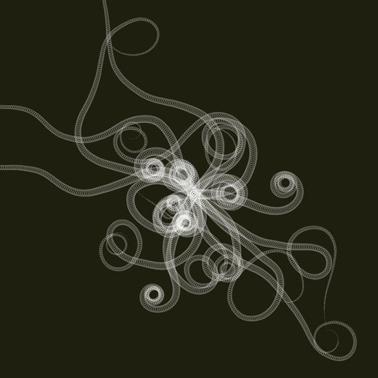
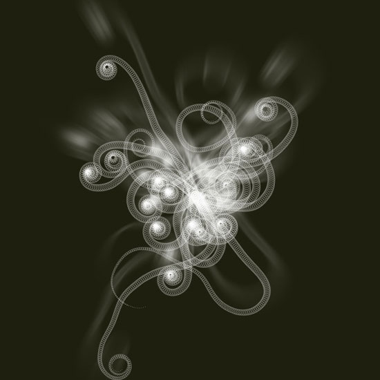

I had some code lying around which I thought I’d share with you. It is an adaption of a Processing algorithm by ART+COM, visualizing an elegant growing plant.
The source code has been organized in two simple classes so it might help you when learning from the tutorial on classes. The first class, Tendril, defines a single branch in the plant. As it grows it calculates the position of new segments by steering its current heading a bit to the left or right, hence the spiraling shape. The second class, Plant, defines a group of tendrils. It has some simple methods to grow and draw all the tendrils together.

size(600, 600)
from math import pi, sin, cos, radians
class Tendril:
def __init__(self, x, y, width=15):
""" A new sinewy tendril at location x and y.
Its segment width will gradually become smaller as it grows.
"""
self.x = x
self.y = y
self.width = width
self.angle = random(2*pi) - pi # random angle in radians.
self.segments = []
self.v = 0
def grow(self, distance=3.0, curl=1.0, step=0.02):
""" Tendril segment growth using fluid, spiral sine functions,
taken from the ART+COM Tendrils class for Processing.
"""
# Think of a tendril having a steering compass.
# For each new segment, the compass shifts a bit left or right.
self.x += cos(self.angle) * distance
self.y += sin(self.angle) * distance
self.v += random(-step, step)
self.v *= 0.9 + curl*0.1
self.angle += self.v
self.segments.append(
(self.x, self.y, self.angle)
)
def draw(self, path=None):
""" Draws all the segments in the tendril,
as separate ovals or as a single path if one is supplied.
"""
n = len(self.segments)
for i, (x, y, angle) in enumerate(self.segments):
r = (1-float(i)/n) * self.width # size gradually decreases.
if path != None:
path.oval(x, y, r, r)
else:
oval(x, y, r, r)
class Plant:
def __init__(self, x, y, tendrils=30, width=15):
""" A collection of tendrils.
"""
self.x = x
self.y = y
self.tendrils = []
for i in range(tendrils):
self.tendrils.append(
Tendril(self.x, self.y, width)
)
def grow(self, distance=3.0, curl=1.0, step=0.02):
""" Grow a new segment on each of the plant's tendrils.
"""
for b in self.tendrils:
b.grow(distance, curl, step)
def draw(self):
""" Draw the plant.
"""
for tendril in self.tendrils:
tendril.draw()
def path(self):
""" Return the plant as a path consisting of ovals.
"""
path = BezierPath()
for tendril in self.tendrils:
tendril.draw(path)
return path
background(0.12, 0.12, 0.06)
nofill()
stroke(1, 0.5)
strokewidth(0.5)
plant = Plant(WIDTH/2, HEIGHT/2, tendrils=20)
for i in range(200):
plant.grow(curl=1.0, step=0.02)
plant.draw()
With a simple adaption we can use the plant.path() method as input for Core Image. This way we can transform the plant shape as a layer of pixel data. Simply add the lines of code below the image to the bottom of the script, and play around with the curl parameter a bit.

coreimage = ximport("coreimage")
canvas = coreimage.canvas(WIDTH, HEIGHT)
layer = canvas.append(
plant.path(),
fill=color(1,0),
stroke=color(1,0.8),
strokewidth=0.2
)
layer.filter("zoomblur", amount=10)
canvas.draw()
Created by Tom De Smedt
Based on the ‘Tendrils’ algorithm by ART+COM